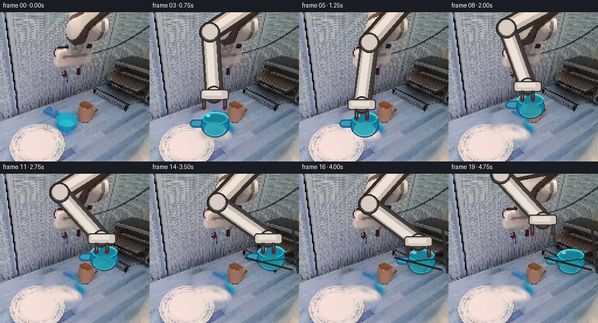
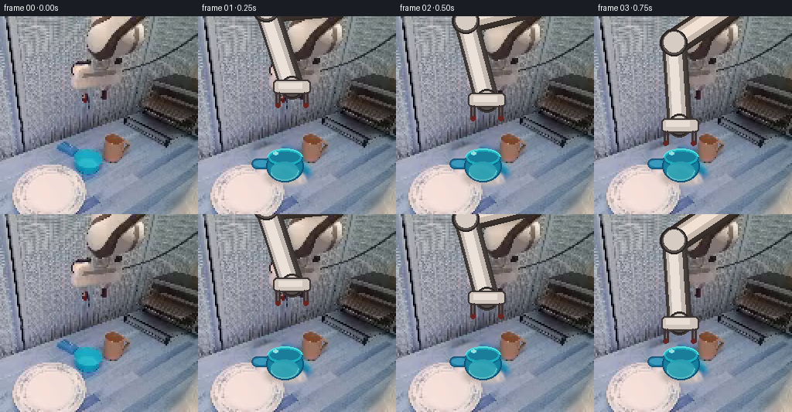
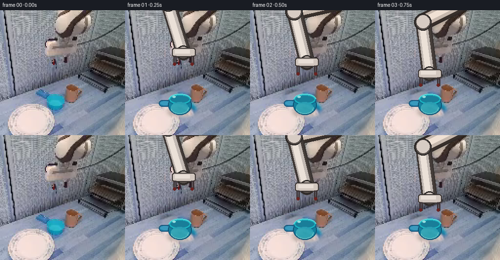
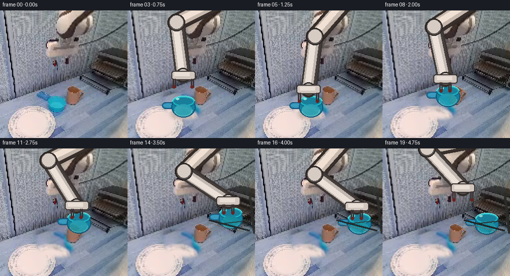
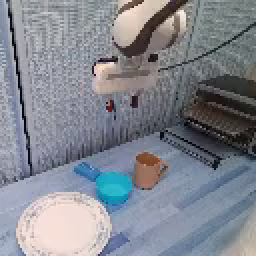
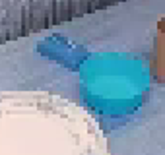
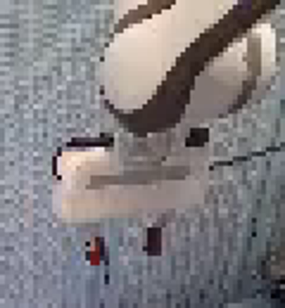
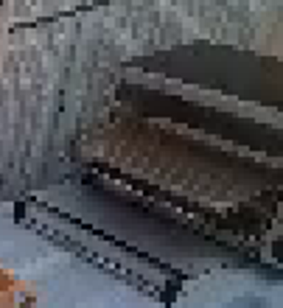
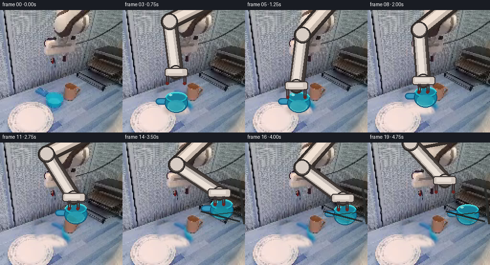

CODING AGENTS AS PIXEL WORLD MODELS
traex/GPT-5.6-Sol · common50_0044
点击播放 · 原生 RGB 像素
逐轮保存的候选
回放视频、检查图与代码变化。
每份候选均可单独播放。实际图片检查记录在下方工具轨迹中。
候选 01播放与检查图
点击播放 · 原生 RGB 像素


展开代码变化
--- 上一保存版本
+++ 本次保存版本
@@ -0,0 +1,157 @@
+from pathlib import Path
+import math
+import numpy as np
+import cv2
+from PIL import Image, ImageDraw, ImageFilter
+import artifact_io
+
+CASE = Path(__file__).resolve().parent
+BASE = np.asarray(Image.open(CASE/'first_frame.png').convert('RGB'))
+H,W = BASE.shape[:2]
+
+# --- Recover clean static workspace beneath the moving vessel/robot ---
+def clean_background():
+ im = BASE.copy()
+ # Vessel + its immediate blue shadow: synthesize tabletop from nearby texture.
+ mask = np.zeros((H,W),np.uint8)
+ cv2.ellipse(mask,(107,192),(34,25),0,0,360,255,-1)
+ cv2.ellipse(mask,(89,172),(20,10),18,0,360,255,-1)
+ cv2.ellipse(mask,(120,204),(26,13),0,0,360,255,-1)
+ # Keep the brown mug untouched.
+ cv2.ellipse(mask,(148,171),(18,23),0,0,360,0,-1)
+ # Deterministic texture replacement from a nearby tabletop area.
+ src = np.roll(im, 34, axis=1)
+ src = cv2.GaussianBlur(src,(0,0),1.3)
+ soft=cv2.GaussianBlur(mask,(0,0),3).astype(float)[...,None]/255
+ im=np.uint8(im*(1-soft)+src*soft)
+ return im
+BG=clean_background()
+
+def poly_mask(points, blur=1.2):
+ m=Image.new('L',(W,H),0); d=ImageDraw.Draw(m)
+ d.polygon([(int(x),int(y)) for x,y in points],fill=255)
+ if blur: m=m.filter(ImageFilter.GaussianBlur(blur))
+ return np.asarray(m)
+
+def capsule_layer(a,b,width, colors, outline=None):
+ """Stable rigid-link capsule with longitudinal highlights."""
+ a=np.array(a,float); b=np.array(b,float); v=b-a; L=max(1,np.linalg.norm(v)); n=np.array([-v[1],v[0]])/L
+ pad=int(width+8); x0=max(0,int(min(a[0],b[0])-pad)); y0=max(0,int(min(a[1],b[1])-pad)); x1=min(W,int(max(a[0],b[0])+pad)); y1=min(H,int(max(a[1],b[1])+pad))
+ lay=Image.new('RGBA',(W,H),(0,0,0,0)); dr=ImageDraw.Draw(lay)
+ if outline: dr.line([tuple(a),tuple(b)],fill=outline,width=int(width+5)); r=(width+5)//2; dr.ellipse((a[0]-r,a[1]-r,a[0]+r,a[1]+r),fill=outline);dr.ellipse((b[0]-r,b[1]-r,b[0]+r,b[1]+r),fill=outline)
+ # bands make a softly modeled, but rigid, white arm
+ bands=[(1.00,colors[0]),(.78,colors[1]),(.45,colors[2])]
+ for frac,col in bands:
+ ww=max(2,int(width*frac)); off=n*(width*(1-frac)*.18)
+ aa=a+off;bb=b+off
+ dr.line([tuple(aa),tuple(bb)],fill=col,width=ww)
+ r=ww/2; dr.ellipse((aa[0]-r,aa[1]-r,aa[0]+r,aa[1]+r),fill=col);dr.ellipse((bb[0]-r,bb[1]-r,bb[0]+r,bb[1]+r),fill=col)
+ return lay
+
+def arm_pose(wrist):
+ shoulder=np.array((180.,-17.)); w=np.array(wrist,float); L1,L2=92.,106.
+ q=w-shoulder; dist=max(1,np.linalg.norm(q)); dist=min(dist,L1+L2-1); ang=math.atan2(q[1],q[0]); c=np.clip((L1*L1+dist*dist-L2*L2)/(2*L1*dist),-1,1)
+ # Left/up elbow branch matches the initial arm silhouette and avoids the rack.
+ th=ang+math.acos(c); elbow=shoulder+L1*np.array((math.cos(th),math.sin(th)))
+ return shoulder,elbow,w
+
+def draw_arm(frame,wrist,grip_closed=True, released=False):
+ sh,el,wr=arm_pose(wrist)
+ canvas=Image.fromarray(frame).convert('RGBA')
+ # cast shadow/contact shade behind the robot links
+ shadow=Image.new('RGBA',(W,H),(0,0,0,0));sd=ImageDraw.Draw(shadow)
+ sd.line([tuple(sh+np.array((4,5))),tuple(el+np.array((4,5))),tuple(wr+np.array((4,5)))],fill=(25,28,28,65),width=28)
+ shadow=shadow.filter(ImageFilter.GaussianBlur(4)); canvas=Image.alpha_composite(canvas,shadow)
+ upper=capsule_layer(sh,el,31,((57,48,43,255),(198,184,173,255),(240,225,212,255)),(48,42,39,255))
+ lower=capsule_layer(el,wr,27,((70,62,58,255),(193,184,178,255),(235,225,216,255)),(58,52,50,255))
+ canvas=Image.alpha_composite(canvas,upper); canvas=Image.alpha_composite(canvas,lower)
+ dr=ImageDraw.Draw(canvas)
+ # articulated joints and compact wrist block, constant geometry
+ for p,r in [(el,17),(wr,14)]:
+ dr.ellipse((p[0]-r,p[1]-r,p[0]+r,p[1]+r),fill=(85,77,73,255),outline=(40,37,36,255),width=2)
+ dr.ellipse((p[0]-r+4,p[1]-r+3,p[0]+r-4,p[1]+r-5),fill=(215,204,196,255))
+ # horizontal wrist head and two descending fingers
+ x,y=wr
+ dr.rounded_rectangle((x-24,y-9,x+24,y+9),radius=5,fill=(209,198,190,255),outline=(61,55,53,255),width=2)
+ dr.rectangle((x-17,y-5,x+13,y+2),fill=(232,222,214,255))
+ gap=9 if grip_closed else 18
+ finger_len=18
+ for sx in (-gap,gap):
+ dr.rounded_rectangle((x+sx-3,y+7,x+sx+3,y+finger_len+7),radius=2,fill=(61,51,53,255))
+ dr.ellipse((x+sx-3,y+finger_len+3,x+sx+3,y+finger_len+9),fill=(106,35,33,255))
+ return np.asarray(canvas.convert('RGB'))
+
+def draw_vessel(frame, center, angle=0, shadow=True):
+ """Small rigid blue drinking vessel, kept as one shape throughout motion."""
+ cx,cy=center
+ layer=Image.new('RGBA',(W,H),(0,0,0,0)); dr=ImageDraw.Draw(layer)
+ if shadow:
+ sh=Image.new('RGBA',(W,H),(0,0,0,0)); d=ImageDraw.Draw(sh)
+ d.ellipse((cx-21,cy+10,cx+24,cy+23),fill=(20,35,48,80)); sh=sh.filter(ImageFilter.GaussianBlur(4)); layer=Image.alpha_composite(layer,sh); dr=ImageDraw.Draw(layer)
+ # Draw at origin and rotate as a rigid sprite. Bowl center is local (35,35), handle points left.
+ sp=Image.new('RGBA',(78,68),(0,0,0,0)); d=ImageDraw.Draw(sp)
+ # handle (back), dark rim and body
+ d.rounded_rectangle((1,26,30,39),radius=6,fill=(35,126,166,255),outline=(28,88,124,255),width=2)
+ d.ellipse((4,28,23,36),fill=(57,154,190,255))
+ d.ellipse((20,15,68,56),fill=(20,128,157,255),outline=(17,83,117,255),width=2)
+ d.ellipse((21,13,67,36),fill=(26,177,191,255),outline=(16,102,137,255),width=2)
+ # dark inner liquid/cavity with near rim, highlights
+ d.ellipse((25,17,63,31),fill=(25,126,153,255))
+ d.arc((21,13,67,36),180,355,fill=(96,219,219,255),width=2)
+ d.ellipse((29,17,35,21),fill=(151,235,231,220))
+ d.ellipse((26,30,61,52),fill=(20,159,179,210))
+ d.arc((25,28,62,54),0,165,fill=(51,190,199,180),width=2)
+ if abs(angle)>0.05: sp=sp.rotate(angle,resample=Image.Resampling.BICUBIC,expand=False,center=(39,34))
+ layer.alpha_composite(sp,(int(cx-39),int(cy-34)))
+ return np.asarray(Image.alpha_composite(Image.fromarray(frame).convert('RGBA'),layer).convert('RGB'))
+
+def rack_occlusion(frame, vessel_center, t):
+ """Redraw the rack front rails over the inserted cup when it reaches the shelf."""
+ cx,cy=vessel_center
+ if cx<175: return frame
+ out=Image.fromarray(frame); d=ImageDraw.Draw(out,'RGBA')
+ # shelf depth plane and front retaining bar (matches existing rack perspective)
+ d.line([(163,143),(244,164)],fill=(31,36,38,235),width=4)
+ d.line([(161,148),(238,168)],fill=(104,108,105,210),width=2)
+ d.line([(184,151),(254,143)],fill=(42,43,40,180),width=3)
+ # right frame in foreground
+ d.line([(245,89),(254,170)],fill=(43,44,42,230),width=5)
+ return np.asarray(out)
+
+def smooth(a,b,u):
+ u=np.clip(u,0,1); u=u*u*(3-2*u); return a+(b-a)*u
+
+frames=[]
+# Staged behavior: approach, grasp, lift, carry, lower/place, release/withdraw.
+for i in range(20):
+ if i==0:
+ frames.append(BASE.copy()); continue
+ # vessel center starts at (107,192); grasp reference wrist is above it.
+ if i<=4:
+ u=smooth(0,1,(i-1)/3); wc=np.array((121,91))*(1-u)+np.array((107,158))*u; vc=np.array((107.,192.)); held=False; open_grip=True
+ elif i<=6:
+ wc=np.array((107.,158.)); vc=np.array((107.,192.)); held=True; open_grip=False
+ elif i<=9:
+ u=smooth(0,1,(i-6)/3); wc=np.array((107,158))*(1-u)+np.array((145,116))*u; vc=wc+np.array((0.,34.)); held=True; open_grip=False
+ elif i<=13:
+ u=smooth(0,1,(i-9)/4); wc=np.array((145,116))*(1-u)+np.array((202,105))*u; vc=wc+np.array((0.,34.)); held=True; open_grip=False
+ elif i<=15:
+ u=smooth(0,1,(i-13)/2); wc=np.array((202,105))*(1-u)+np.array((204,116))*u; vc=wc+np.array((0.,34.)); held=True; open_grip=False
+ elif i<=17:
+ wc=np.array((204.,116.)); vc=np.array((204.,150.)); held=False; open_grip=True
+ else:
+ u=smooth(0,1,(i-17)/2); wc=np.array((204,116))*(1-u)+np.array((161,79))*u; vc=np.array((204.,150.)); held=False; open_grip=True
+ fr=BG.copy()
+ # Subtle, physically plausible contact shadow only when on a surface.
+ contact = (i<=4 or i>=16)
+ fr=draw_vessel(fr,vc,angle=0,shadow=contact)
+ fr=rack_occlusion(fr,vc,i)
+ fr=draw_arm(fr,wc,grip_closed=not open_grip,released=open_grip)
+ # Rack front is in front of the placed object, but hand should still be visible during lowering.
+ if i>=16: fr=rack_occlusion(fr,vc,i)
+ frames.append(fr)
+
+frames=np.stack(frames).astype(np.uint8)
+# Guarantee exact contract keyframe.
+frames[0]=BASE
+artifact_io.save(frames,CASE)
候选 02播放与检查图
点击播放 · 原生 RGB 像素


展开代码变化
--- 上一保存版本
+++ 本次保存版本
@@ -127,28 +127,29 @@
if i==0:
frames.append(BASE.copy()); continue
# vessel center starts at (107,192); grasp reference wrist is above it.
- if i<=4:
- u=smooth(0,1,(i-1)/3); wc=np.array((121,91))*(1-u)+np.array((107,158))*u; vc=np.array((107.,192.)); held=False; open_grip=True
- elif i<=6:
+ if i<=5:
+ # Continue naturally from the visible frame-0 wrist at about (121,78).
+ u=smooth(0,1,i/5); wc=np.array((121,78))*(1-u)+np.array((107,158))*u; vc=np.array((107.,192.)); held=False; open_grip=True
+ elif i<=7:
wc=np.array((107.,158.)); vc=np.array((107.,192.)); held=True; open_grip=False
- elif i<=9:
- u=smooth(0,1,(i-6)/3); wc=np.array((107,158))*(1-u)+np.array((145,116))*u; vc=wc+np.array((0.,34.)); held=True; open_grip=False
- elif i<=13:
- u=smooth(0,1,(i-9)/4); wc=np.array((145,116))*(1-u)+np.array((202,105))*u; vc=wc+np.array((0.,34.)); held=True; open_grip=False
- elif i<=15:
- u=smooth(0,1,(i-13)/2); wc=np.array((202,105))*(1-u)+np.array((204,116))*u; vc=wc+np.array((0.,34.)); held=True; open_grip=False
+ elif i<=10:
+ u=smooth(0,1,(i-7)/3); wc=np.array((107,158))*(1-u)+np.array((145,116))*u; vc=wc+np.array((0.,34.)); held=True; open_grip=False
+ elif i<=14:
+ u=smooth(0,1,(i-10)/4); wc=np.array((145,116))*(1-u)+np.array((202,105))*u; vc=wc+np.array((0.,34.)); held=True; open_grip=False
+ elif i<=16:
+ u=smooth(0,1,(i-14)/2); wc=np.array((202,105))*(1-u)+np.array((204,116))*u; vc=wc+np.array((0.,34.)); held=True; open_grip=False
elif i<=17:
wc=np.array((204.,116.)); vc=np.array((204.,150.)); held=False; open_grip=True
else:
u=smooth(0,1,(i-17)/2); wc=np.array((204,116))*(1-u)+np.array((161,79))*u; vc=np.array((204.,150.)); held=False; open_grip=True
fr=BG.copy()
# Subtle, physically plausible contact shadow only when on a surface.
- contact = (i<=4 or i>=16)
+ contact = (i<=5 or i>=17)
fr=draw_vessel(fr,vc,angle=0,shadow=contact)
fr=rack_occlusion(fr,vc,i)
fr=draw_arm(fr,wc,grip_closed=not open_grip,released=open_grip)
# Rack front is in front of the placed object, but hand should still be visible during lowering.
- if i>=16: fr=rack_occlusion(fr,vc,i)
+ if i>=17: fr=rack_occlusion(fr,vc,i)
frames.append(fr)
frames=np.stack(frames).astype(np.uint8)
候选 03播放与检查图
点击播放 · 原生 RGB 像素

展开代码变化
--- 上一保存版本
+++ 本次保存版本
@@ -130,10 +130,10 @@
if i<=5:
# Continue naturally from the visible frame-0 wrist at about (121,78).
u=smooth(0,1,i/5); wc=np.array((121,78))*(1-u)+np.array((107,158))*u; vc=np.array((107.,192.)); held=False; open_grip=True
- elif i<=7:
+ elif i<=6:
wc=np.array((107.,158.)); vc=np.array((107.,192.)); held=True; open_grip=False
elif i<=10:
- u=smooth(0,1,(i-7)/3); wc=np.array((107,158))*(1-u)+np.array((145,116))*u; vc=wc+np.array((0.,34.)); held=True; open_grip=False
+ u=smooth(0,1,(i-6)/4); wc=np.array((107,158))*(1-u)+np.array((145,116))*u; vc=wc+np.array((0.,34.)); held=True; open_grip=False
elif i<=14:
u=smooth(0,1,(i-10)/4); wc=np.array((145,116))*(1-u)+np.array((202,105))*u; vc=wc+np.array((0.,34.)); held=True; open_grip=False
elif i<=16:
可观测工具轨迹
实际执行的命令与返回图片。
命令 1exit 0
/bin/bash -lc "cat prompt.txt && printf '\\n---RULES---\\n' && cat GENERATION_RULES.md"
命令 2exit 1
/bin/bash -lc "find . -maxdepth 2 -type f -printf '%p %s bytes\\n' | sort && printf '\\nTOOLS\\n' && command -v ffmpeg && command -v python3"
命令 3exit 0
/bin/bash -lc "cat task_spec.json; sed -n '1,240p' artifact_io.py"
命令 4exit 0
/bin/bash -lc "python3 - <<'PY'
from PIL import Image
im=Image.open('first_frame.png')
print(im.mode, im.size)
PY
python3 - <<'PY'
mods=['numpy','PIL','cv2','imageio','scipy']
for m in mods:
try:
x=__import__(m); print(m,'yes',getattr(x,'__version__',''))
except Exception as e: print(m,'no')
PY"命令 5exit 0
/bin/bash -lc "python3 - <<'PY'
import cv2, numpy as np
im=cv2.imread('first_frame.png')
hsv=cv2.cvtColor(im,cv2.COLOR_BGR2HSV)
for lo,hi in [((75,40,50),(110,255,255)),((80,60,70),(105,255,255)),((70,50,50),(115,255,255))]:
m=cv2.inRange(hsv,np.array(lo),np.array(hi)); ys,xs=np.where(m>0)
print(lo,hi,len(xs),(xs.min(),ys.min(),xs.max(),ys.max()) if len(xs) else None)
cv2.imwrite('blue_mask.png',cv2.inRange(hsv,np.array((75,40,50)),np.array((110,255,255))))
PY"命令 6exit 0
/bin/bash -lc "python3 - <<'PY' import math S=(174,-8) for W in [(121,72),(108,150),(104,170),(140,130),(205,100),(205,120)]: dx=W[0]-S[0];dy=W[1]-S[1];d=math.hypot(dx,dy); L1=108;L2=96 a=math.atan2(dy,dx); c=(L1*L1+d*d-L2*L2)/(2*L1*d);b=math.acos(max(-1,min(1,c))) E=[] for sg in [1,-1]: th=a+sg*b; E.append((round(S[0]+L1*math.cos(th)),round(S[1]+L1*math.sin(th)))) print(W,d,E) PY"
命令 7exit 0
/bin/bash -lc "python3 - <<'PY'
from PIL import Image
im=Image.open('first_frame.png')
for name,box in [('arm',(70,0,190,130)),('cup',(55,145,140,225)),('rack',(155,60,256,170))]:
im.crop(box).resize(((box[2]-box[0])*4,(box[3]-box[1])*4)).save(name+'.png')
PY"命令 8exit 0
/bin/bash -lc "python3 - <<'PY' import math S=(180,-15);L1=90;L2=105 for W in [(121,91),(108,158),(110,145),(140,125),(170,105),(202,91),(200,98)]: dx=W[0]-S[0];dy=W[1]-S[1];d=math.hypot(dx,dy); a=math.atan2(dy,dx); c=(L1*L1+d*d-L2*L2)/(2*L1*d); b=math.acos(max(-1,min(1,c))); print(W,d,[(round(S[0]+L1*math.cos(a+s*b)),round(S[1]+L1*math.sin(a+s*b))) for s in [1,-1]]) PY"
命令 9exit 0
/bin/bash -lc "python3 - <<'PY'
from PIL import Image
import colorsys, numpy as np
im=np.array(Image.open('first_frame.png'))
for y,x in [(194,108),(180,100),(165,80),(170,93),(210,110),(195,130),(180,120),(160,90)]:
rgb=im[y,x]; print((x,y),rgb, cv:=__import__('cv2').cvtColor(rgb.reshape(1,1,3),__import__('cv2').COLOR_RGB2HSV)[0,0])
PY"命令 10exit 0
/bin/bash -lc "cat > generate.py <<'PY'
from pathlib import Path
import math
import numpy as np
import cv2
from PIL import Image, ImageDraw, ImageFilter
import artifact_io
CASE = Path(__file__).resolve().parent
BASE = np.asarray(Image.open(CASE/'first_frame.png').convert('RGB'))
H,W = BASE.shape[:2]
# --- Recover clean static workspace beneath the moving vessel/robot ---
def clean_background():
im = BASE.copy()
# Vessel + its immediate blue shadow: synthesize tabletop from nearby texture.
mask = np.zeros((H,W),np.uint8)
cv2.ellipse(mask,(107,192),(34,25),0,0,360,255,-1)
cv2.ellipse(mask,(89,172),(20,10),18,0,360,255,-1)
cv2.ellipse(mask,(120,204),(26,13),0,0,360,255,-1)
# Keep the brown mug untouched.
cv2.ellipse(mask,(148,171),(18,23),0,0,360,0,-1)
# Deterministic texture replacement from a nearby tabletop area.
src = np.roll(im, 34, axis=1)
src = cv2.GaussianBlur(src,(0,0),1.3)
soft=cv2.GaussianBlur(mask,(0,0),3).astype(float)[...,None]/255
im=np.uint8(im*(1-soft)+src*soft)
return im
BG=clean_background()
def poly_mask(points, blur=1.2):
m=Image.new('L',(W,H),0); d=ImageDraw.Draw(m)
d.polygon([(int(x),int(y)) for x,y in points],fill=255)
if blur: m=m.filter(ImageFilter.GaussianBlur(blur))
return np.asarray(m)
def capsule_layer(a,b,width, colors, outline=None):
\"\"\"Stable rigid-link capsule with longitudinal highlights.\"\"\"
a=np.array(a,float); b=np.array(b,float); v=b-a; L=max(1,np.linalg.norm(v)); n=np.array([-v[1],v[0]])/L
pad=int(width+8); x0=max(0,int(min(a[0],b[0])-pad)); y0=max(0,int(min(a[1],b[1])-pad)); x1=min(W,int(max(a[0],b[0])+pad)); y1=min(H,int(max(a[1],b[1])+pad))
lay=Image.new('RGBA',(W,H),(0,0,0,0)); dr=ImageDraw.Draw(lay)
if outline: dr.line([tuple(a),tuple(b)],fill=outline,width=int(width+5)); r=(width+5)//2; dr.ellipse((a[0]-r,a[1]-r,a[0]+r,a[1]+r),fill=outline);dr.ellipse((b[0]-r,b[1]-r,b[0]+r,b[1]+r),fill=outline)
# bands make a softly modeled, but rigid, white arm
bands=[(1.00,colors[0]),(.78,colors[1]),(.45,colors[2])]
for frac,col in bands:
ww=max(2,int(width*frac)); off=n*(width*(1-frac)*.18)
aa=a+off;bb=b+off
dr.line([tuple(aa),tuple(bb)],fill=col,width=ww)
r=ww/2; dr.ellipse((aa[0]-r,aa[1]-r,aa[0]+r,aa[1]+r),fill=col);dr.ellipse((bb[0]-r,bb[1]-r,bb[0]+r,bb[1]+r),fill=col)
return lay
def arm_pose(wrist):
shoulder=np.array((180.,-17.)); w=np.array(wrist,float); L1,L2=92.,106.
q=w-shoulder; dist=max(1,np.linalg.norm(q)); dist=min(dist,L1+L2-1); ang=math.atan2(q[1],q[0]); c=np.clip((L1*L1+dist*dist-L2*L2)/(2*L1*dist),-1,1)
# Left/up elbow branch matches the initial arm silhouette and avoids the rack.
th=ang+math.acos(c); elbow=shoulder+L1*np.array((math.cos(th),math.sin(th)))
return shoulder,elbow,w
def draw_arm(frame,wrist,grip_closed=True, released=False):
sh,el,wr=arm_pose(wrist)
canvas=Image.fromarray(frame).convert('RGBA')
# cast shadow/contact shade behind the robot links
shadow=Image.new('RGBA',(W,H),(0,0,0,0));sd=ImageDraw.Draw(shadow)
sd.line([tuple(sh+np.array((4,5))),tuple(el+np.array((4,5))),tuple(wr+np.array((4,5)))],fill=(25,28,28,65),width=28)
shadow=shadow.filter(ImageFilter.GaussianBlur(4)); canvas=Image.alpha_composite(canvas,shadow)
upper=capsule_layer(sh,el,31,((57,48,43,255),(198,184,173,255),(240,225,212,255)),(48,42,39,255))
lower=capsule_layer(el,wr,27,((70,62,58,255),(193,184,178,255),(235,225,216,255)),(58,52,50,255))
canvas=Image.alpha_composite(canvas,upper); canvas=Image.alpha_composite(canvas,lower)
dr=ImageDraw.Draw(canvas)
# articulated joints and compact wrist block, constant geometry
for p,r in [(el,17),(wr,14)]:
dr.ellipse((p[0]-r,p[1]-r,p[0]+r,p[1]+r),fill=(85,77,73,255),outline=(40,37,36,255),width=2)
dr.ellipse((p[0]-r+4,p[1]-r+3,p[0]+r-4,p[1]+r-5),fill=(215,204,196,255))
# horizontal wrist head and two descending fingers
x,y=wr
dr.rounded_rectangle((x-24,y-9,x+24,y+9),radius=5,fill=(209,198,190,255),outline=(61,55,53,255),width=2)
dr.rectangle((x-17,y-5,x+13,y+2),fill=(232,222,214,255))
gap=9 if grip_closed else 18
finger_len=18
for sx in (-gap,gap):
dr.rounded_rectangle((x+sx-3,y+7,x+sx+3,y+finger_len+7),radius=2,fill=(61,51,53,255))
dr.ellipse((x+sx-3,y+finger_len+3,x+sx+3,y+finger_len+9),fill=(106,35,33,255))
return np.asarray(canvas.convert('RGB'))
def draw_vessel(frame, center, angle=0, shadow=True):
\"\"\"Small rigid blue drinking vessel, kept as one shape throughout motion.\"\"\"
cx,cy=center
layer=Image.new('RGBA',(W,H),(0,0,0,0)); dr=ImageDraw.Draw(layer)
if shadow:
sh=Image.new('RGBA',(W,H),(0,0,0,0)); d=ImageDraw.Draw(sh)
d.ellipse((cx-21,cy+10,cx+24,cy+23),fill=(20,35,48,80)); sh=sh.filter(ImageFilter.GaussianBlur(4)); layer=Image.alpha_composite(layer,sh); dr=ImageDraw.Draw(layer)
# Draw at origin and rotate as a rigid sprite. Bowl center is local (35,35), handle points left.
sp=Image.new('RGBA',(78,68),(0,0,0,0)); d=ImageDraw.Draw(sp)
# handle (back), dark rim and body
d.rounded_rectangle((1,26,30,39),radius=6,fill=(35,126,166,255),outline=(28,88,124,255),width=2)
d.ellipse((4,28,23,36),fill=(57,154,190,255))
d.ellipse((20,15,68,56),fill=(20,128,157,255),outline=(17,83,117,255),width=2)
d.ellipse((21,13,67,36),fill=(26,177,191,255),outline=(16,102,137,255),width=2)
# dark inner liquid/cavity with near rim, highlights
d.ellipse((25,17,63,31),fill=(25,126,153,255))
d.arc((21,13,67,36),180,355,fill=(96,219,219,255),width=2)
d.ellipse((29,17,35,21),fill=(151,235,231,220))
d.ellipse((26,30,61,52),fill=(20,159,179,210))
d.arc((25,28,62,54),0,165,fill=(51,190,199,180),width=2)
if abs(angle)>0.05: sp=sp.rotate(angle,resample=Image.Resampling.BICUBIC,expand=False,center=(39,34))
layer.alpha_composite(sp,(int(cx-39),int(cy-34)))
return np.asarray(Image.alpha_composite(Image.fromarray(frame).convert('RGBA'),layer).convert('RGB'))
def rack_occlusion(frame, vessel_center, t):
\"\"\"Redraw the rack front rails over the inserted cup when it reaches the shelf.\"\"\"
cx,cy=vessel_center
if cx<175: return frame
out=Image.fromarray(frame); d=ImageDraw.Draw(out,'RGBA')
# shelf depth plane and front retaining bar (matches existing rack perspective)
d.line([(163,143),(244,164)],fill=(31,36,38,235),width=4)
d.line([(161,148),(238,168)],fill=(104,108,105,210),width=2)
d.line([(184,151),(254,143)],fill=(42,43,40,180),width=3)
# right frame in foreground
d.line([(245,89),(254,170)],fill=(43,44,42,230),width=5)
return np.asarray(out)
def smooth(a,b,u):
u=np.clip(u,0,1); u=u*u*(3-2*u); return a+(b-a)*u
frames=[]
# Staged behavior: approach, grasp, lift, carry, lower/place, release/withdraw.
for i in range(20):
if i==0:
frames.append(BASE.copy()); continue
# vessel center starts at (107,192); grasp reference wrist is above it.
if i<=4:
u=smooth(0,1,(i-1)/3); wc=np.array((121,91))*(1-u)+np.array((107,158))*u; vc=np.array((107.,192.)); held=False; open_grip=True
elif i<=6:
wc=np.array((107.,158.)); vc=np.array((107.,192.)); held=True; open_grip=False
elif i<=9:
u=smooth(0,1,(i-6)/3); wc=np.array((107,158))*(1-u)+np.array((145,116))*u; vc=wc+np.array((0.,34.)); held=True; open_grip=False
elif i<=13:
u=smooth(0,1,(i-9)/4); wc=np.array((145,116))*(1-u)+np.array((202,105))*u; vc=wc+np.array((0.,34.)); held=True; open_grip=False
elif i<=15:
u=smooth(0,1,(i-13)/2); wc=np.array((202,105))*(1-u)+np.array((204,116))*u; vc=wc+np.array((0.,34.)); held=True; open_grip=False
elif i<=17:
wc=np.array((204.,116.)); vc=np.array((204.,150.)); held=False; open_grip=True
else:
u=smooth(0,1,(i-17)/2); wc=np.array((204,116))*(1-u)+np.array((161,79))*u; vc=np.array((204.,150.)); held=False; open_grip=True
fr=BG.copy()
# Subtle, physically plausible contact shadow only when on a surface.
contact = (i<=4 or i>=16)
fr=draw_vessel(fr,vc,angle=0,shadow=contact)
fr=rack_occlusion(fr,vc,i)
fr=draw_arm(fr,wc,grip_closed=not open_grip,released=open_grip)
# Rack front is in front of the placed object, but hand should still be visible during lowering.
if i>=16: fr=rack_occlusion(fr,vc,i)
frames.append(fr)
frames=np.stack(frames).astype(np.uint8)
# Guarantee exact contract keyframe.
frames[0]=BASE
artifact_io.save(frames,CASE)
PY
python3 generate.py
python3 - <<'PY'
import numpy as np
from PIL import Image
f=np.array(Image.open('frames/00.png')); b=np.array(Image.open('first_frame.png'))
print('identical',np.array_equal(f,b),'frames',len(list(__import__('pathlib').Path('frames').glob('*.png'))))
PY"命令 11exit 0
/bin/bash -lc "python3 - <<'PY' import math for S in [(180,-17),(205,-20),(220,-20),(230,-20)]: for W in [(121,78),(107,158),(202,105)]: L1,L2=92,106;dx=W[0]-S[0];dy=W[1]-S[1];d=math.hypot(dx,dy);a=math.atan2(dy,dx);c=(L1*L1+d*d-L2*L2)/(2*L1*d);b=math.acos(max(-1,min(1,c)));print(S,W,[(round(S[0]+L1*math.cos(a+s*b)),round(S[1]+L1*math.sin(a+s*b))) for s in [1,-1]]) print() PY"
命令 12exit 0
/bin/bash -lc "python3 - <<'PY' import math S=(180,-17);L1=92;L2=106 for W in [(121,78),(121,91),(115,105),(107,130),(107,145),(107,158)]: dx=W[0]-S[0];dy=W[1]-S[1];d=math.hypot(dx,dy);a=math.atan2(dy,dx);c=(L1*L1+d*d-L2*L2)/(2*L1*d); b=math.acos(max(-1,min(1,c))); print(W,tuple(round(v,1) for v in (S[0]+L1*math.cos(a+b),S[1]+L1*math.sin(a+b)))) PY"
命令 13exit 0
/bin/bash -lc "python3 - <<'PY'
p='generate.py'
s=open(p).read()
s=s.replace(\" if i<=4:\\n u=smooth(0,1,(i-1)/3); wc=np.array((121,91))*(1-u)+np.array((107,158))*u; vc=np.array((107.,192.)); held=False; open_grip=True\\n elif i<=6:\\n wc=np.array((107.,158.)); vc=np.array((107.,192.)); held=True; open_grip=False\\n elif i<=9:\\n u=smooth(0,1,(i-6)/3); wc=np.array((107,158))*(1-u)+np.array((145,116))*u; vc=wc+np.array((0.,34.)); held=True; open_grip=False\\n elif i<=13:\\n u=smooth(0,1,(i-9)/4); wc=np.array((145,116))*(1-u)+np.array((202,105))*u; vc=wc+np.array((0.,34.)); held=True; open_grip=False\\n elif i<=15:\\n u=smooth(0,1,(i-13)/2); wc=np.array((202,105))*(1-u)+np.array((204,116))*u; vc=wc+np.array((0.,34.)); held=True; open_grip=False\\n elif i<=17:\\n wc=np.array((204.,116.)); vc=np.array((204.,150.)); held=False; open_grip=True\\n else:\\n u=smooth(0,1,(i-17)/2); wc=np.array((204,116))*(1-u)+np.array((161,79))*u; vc=np.array((204.,150.)); held=False; open_grip=True\",
\" if i<=5:\\n # Continue naturally from the visible frame-0 wrist at about (121,78).\\n u=smooth(0,1,i/5); wc=np.array((121,78))*(1-u)+np.array((107,158))*u; vc=np.array((107.,192.)); held=False; open_grip=True\\n elif i<=7:\\n wc=np.array((107.,158.)); vc=np.array((107.,192.)); held=True; open_grip=False\\n elif i<=10:\\n u=smooth(0,1,(i-7)/3); wc=np.array((107,158))*(1-u)+np.array((145,116))*u; vc=wc+np.array((0.,34.)); held=True; open_grip=False\\n elif i<=14:\\n u=smooth(0,1,(i-10)/4); wc=np.array((145,116))*(1-u)+np.array((202,105))*u; vc=wc+np.array((0.,34.)); held=True; open_grip=False\\n elif i<=16:\\n u=smooth(0,1,(i-14)/2); wc=np.array((202,105))*(1-u)+np.array((204,116))*u; vc=wc+np.array((0.,34.)); held=True; open_grip=False\\n elif i<=17:\\n wc=np.array((204.,116.)); vc=np.array((204.,150.)); held=False; open_grip=True\\n else:\\n u=smooth(0,1,(i-17)/2); wc=np.array((204,116))*(1-u)+np.array((161,79))*u; vc=np.array((204.,150.)); held=False; open_grip=True\")
s=s.replace('contact = (i<=4 or i>=16)','contact = (i<=5 or i>=17)')
s=s.replace('if i>=16: fr=rack_occlusion(fr,vc,i)','if i>=17: fr=rack_occlusion(fr,vc,i)')
open(p,'w').write(s)
PY
python3 generate.py"命令 14exit 1
/bin/bash -lc "python3 - <<'PY'
import numpy as np
from PIL import Image
from pathlib import Path
fs=sorted(Path('frames').glob('*.png'))
a=np.stack([np.asarray(Image.open(p).convert('RGB')) for p in fs])
print(a.shape,a.dtype,'first_exact',np.array_equal(a[0],np.asarray(Image.open('first_frame.png').convert('RGB'))))
print('pixel deltas', [int(np.count_nonzero(np.any(a[i]"'!=a[i-1],2))) for i in range(1,20)])
print('"'outputs', [(p.name,p.stat().st_size) for p in [Path('pixels.npz'),Path('index.html'),Path('inspection.png')]])
PY
# syntax/rerun reproducibility check
python3 -m py_compile generate.py
sha256sum pixels.npz > /tmp/hash1
python3 generate.py
sha256sum pixels.npz; cat /tmp/hash1"命令 15exit 0
/bin/bash -lc "python3 - <<'PY'
p='generate.py';s=open(p).read()
s=s.replace(\" elif i<=7:\\n wc=np.array((107.,158.)); vc=np.array((107.,192.)); held=True; open_grip=False\\n elif i<=10:\\n u=smooth(0,1,(i-7)/3); wc=np.array((107,158))*(1-u)+np.array((145,116))*u; vc=wc+np.array((0.,34.)); held=True; open_grip=False\",
\" elif i<=6:\\n wc=np.array((107.,158.)); vc=np.array((107.,192.)); held=True; open_grip=False\\n elif i<=10:\\n u=smooth(0,1,(i-6)/4); wc=np.array((107,158))*(1-u)+np.array((145,116))*u; vc=wc+np.array((0.,34.)); held=True; open_grip=False\")
open(p,'w').write(s)
PY
python3 generate.py
python3 - <<'PY'
from PIL import Image
from pathlib import Path
import numpy as np
f=np.stack([np.asarray(Image.open(p).convert('RGB')) for p in sorted(Path('frames').glob('*.png'))])
assert f.shape==(20,256,256,3) and f.dtype==np.uint8
assert np.array_equal(f[0],np.asarray(Image.open('first_frame.png').convert('RGB')))
assert all(np.any(f[i]"'!=f[i-1]) for i in range(1,20))
print('"'validated',f.shape,'all transitions non-empty')
PY"视觉工具实际返回图片 1

视觉工具实际返回图片 2

视觉工具实际返回图片 3

视觉工具实际返回图片 4

视觉工具实际返回图片 5

视觉工具实际返回图片 6

视觉工具实际返回图片 7

保存候选 3 份；完成命令 15 次；可验证图片返回 7 张。原始 API 响应与完整日志保留在本地。